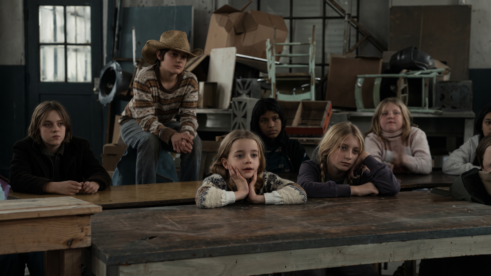
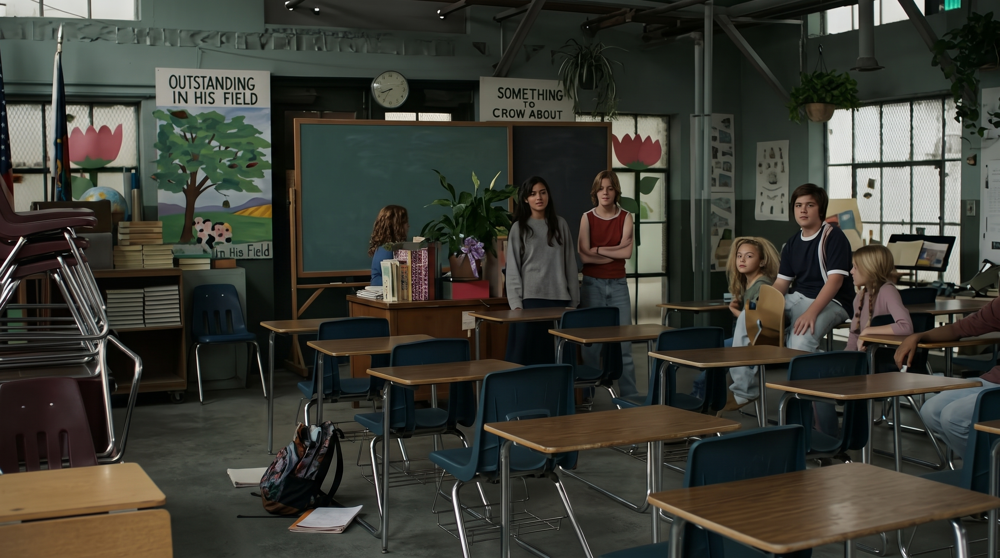

CONFIDENCIAL - CASO: ESCUELA SIN NOMBRE
La Mirada Etnográfica: Análisis de Sesgos y Atribuciones
Revisa los 3 documentos del expediente para desbloquear el análisis audiovisual.
Revisa los 3 documentos del expediente para desbloquear el análisis audiovisual.
Los apoyos teóricos, clips de evidencia fílmica y capturas se desplegarán automáticamente según el minuto del video.
Programa de Reestructuración de Expectativas Docentes y Fortalecimiento del Autoconcepto
🔒 Reproduce cada fase en orden para desbloquear la siguiente etapa y la reflexión final.Fase Bloqueada
Termina de reproducir el video de la Fase 1 para habilitar esta sección.Fase Bloqueada
Termina de reproducir el video de la Fase 2 para habilitar esta sección.Reflexión Final Bloqueada
Completa la reproducción de las 3 Fases de Intervención para desbloquear la reflexión del psicólogo educativo y las referencias APA 7.Frente a contextos de alta vulnerabilidad, el psicólogo educativo no debe limitarse al diagnóstico individual del niño, sino intervenir sistémicamente sobre las creencias institucionales. Cuando cambiamos la mirada del adulto sobre el estudiante, transformamos su destino educativo.
Interaccionismo Simbólico: El autoconcepto del niño se construye como un espejo de cómo lo miran y etiquetan los adultos de su entorno escolar.
Tendencia cognitiva a culpar a las características internas del niño por su bajo rendimiento, ignorando el peso de la situación extrema en la que vive.
"Son vagos, indisciplinados, vienen de la calle y no les importa estudiar."
Aula improvisada junto a las vías del tren, ruido constante, hambre y abandono institucional.
Observa cómo los directivos justifican el abandono escolar responsabilizando a las familias del refugio:
Las expectativas del docente moldean el rendimiento real de los estudiantes a través de 4 factores:
La maestra Stacey Bess rompe las etiquetas negativas limpiando el salón e infundiendo altas expectativas:
Autoeficacia: Al recibir un trato digno y expectativas altas, los niños empiezan a creer en su propia capacidad para aprender y superarse.
El espacio físico envía un mensaje psicológico directo sobre el valor que la institución le da al estudiante:

Desorden, falta de pupitres, suciedad y ruido del tren (Mensaje: "No importas").

Paredes pintadas, libros propios, orden y calidez (Mensaje: "Eres valioso y capaz").
Bandura, A. (1987). Pensamiento y acción: Fundamentos sociales. Martínez Roca.
Bleckner, J. (Director). (2011). Beyond the Blackboard [Detrás de la pizarra] [Película]. Hallmark Hall of Fame Productions.
Mead, G. H. (1934). Mind, self, and society: From the standpoint of a social behaviorist. University of Chicago Press.
Rosenthal, R., & Jacobson, L. (1968). Pygmalion in the classroom: Teacher expectation and pupils' intellectual development. Holt, Rinehart & Winston.
Ross, L. (1977). The intuitive psychologist and his shortcomings: Distortions in the attribution process. En L. Berkowitz (Ed.), Advances in experimental social psychology (Vol. 10, pp. 173–220). Academic Press.